Arena hazards: where every moving thing comes from
Owner, 2026-09-28: "the 3d elements in the arena need checking ... like not having spikes appear from just nowhere." This page audits every hazard and moving element in the six venues, the test bay and the two side events that have moving parts. Each one is shown at rest, while arming, while acting and on the way back. All frames are real Godot renders (desktop Forward+, high tier, venue kit on). The fight strip uses the fight camera (yaw -135, pitch 50, 28 degree lens, 6.2 m). The close strip is a low angle chosen to show the housing. Top row is before (39e0cd3), bottom row is after (branch wave-c-hazards). Gameplay is identical: no collision shape, position, timing or tick moved, and the six fight hashes are bit for bit the same (see the end of the page).
Summary
The spikes did come from nowhere. They rose through solid floor under a painted plate, and at full height every pin floated 8 cm above the plate. That is the same in four places: the Yard, the Grinder (wakes at 1:30), the Crush (wakes at 1:30) and the Coliseum, plus the Run. Now they rise out of bored holes in a real sunk bed, on their own posts.
Every grinder was lying on the floor. Now each is sunk into a well with a motor under it. The sleeping ones no longer fake a spin, and they spin up through their wake countdown instead of snapping on.
Floating things: the Crush ram lamps, the Coliseum banner poles and the Run's press platens were all hanging in the air. Each now has something holding it up.
Drop Zone pit, flame jets, turntables and the belt were already believable. Each got smaller hardware: leaf pockets and rails, mounting plates and pilot flames, a bearing ring.
Pinball drop targets sank through solid floor. They now drop into slots.
The Yard
Centre spike patch (1.6 m, 3 x 3 pins)Fixed
Every 6 s, 4.5 s from 0:45, held up from the endgame
BeforeThe bed was a 6 mm painted plate lying on solid floor with printed rings for holes. The pins came up through that solid floor, and at full height each one stood 8 cm above the plate on nothing: the spike mesh ended at its collar.
AfterReal hole cut in the floor. A slotted steel grate with nine bored holes (each with a bore liner, so the plate has thickness) over a dark tray you can see into, and a lit guide plate in the tray that the warning layer drives, so the holes glow and pulse red while it arms. Each pin is now a long post, so at the top of the stroke it stands on its own shaft coming up out of the bore.
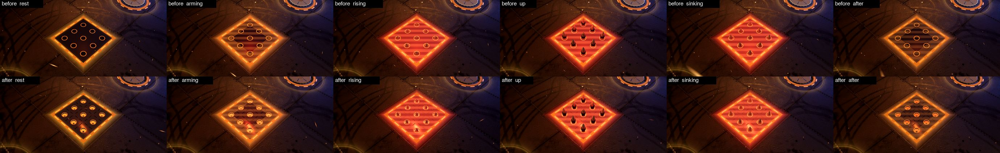
Fight camera. Top: before. Bottom: after.
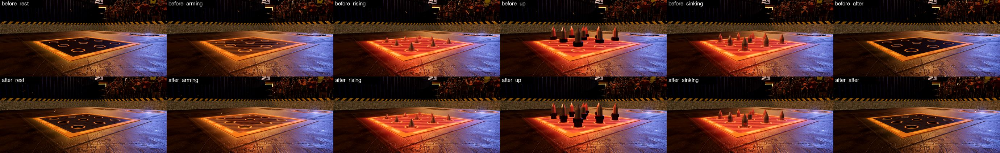
Close, low. Top: before. Bottom: after.
Two wall grinders (wave B, wake at 1:30)Fixed
Asleep until 1:30, 3 s wake countdown, then always on
BeforeDisc lying on top of the floor in a painted collar. While asleep it wore the spin-blur card, so a still disc looked like it was spinning in a still frame. On the wake tick it jumped from still to full speed.
AfterSunk into a real round well: a hole in the floor, a lined well 0.3 m deep, a motor drum on ribs and a spindle. The disc sits nearly flush and its teeth run in the dark gap. No blur while it is asleep, and it spins up over the 3 s wake countdown, with the blur fading in.
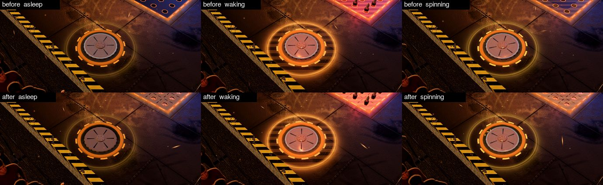
Fight camera. Top: before. Bottom: after.
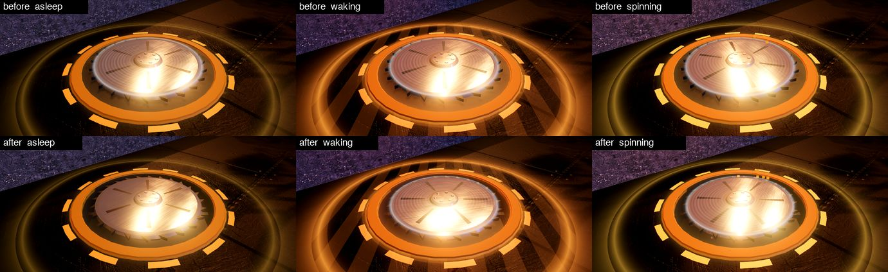
Close, low. Top: before. Bottom: after.
The Grinder
Two floor grinders (always on)Fixed
Always cutting
BeforeSame disc lying on the floor. The venue kit's spark plume sits on top of it.
AfterSame sunk well, motor and flush disc as the Yard's.
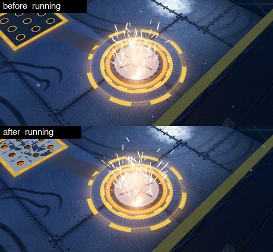
Fight camera. Top: before. Bottom: after.
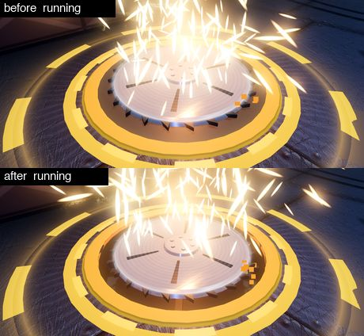
Close, low. Top: before. Bottom: after.
Centre spike patch (1.4 m, wakes at 1:30)Fixed
Asleep until 1:30, 3.5 s arming, then 4.5 s cycle
BeforeSame painted bed and floating pins as the Yard. While asleep it was a printed square.
AfterSame sunk bed. While asleep, the bed and its bores are visible from the bell. While it wakes, the holes glow in the warning rhythm.
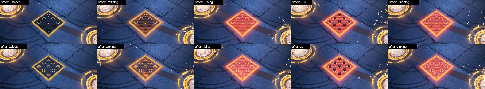
Fight camera. Top: before. Bottom: after.
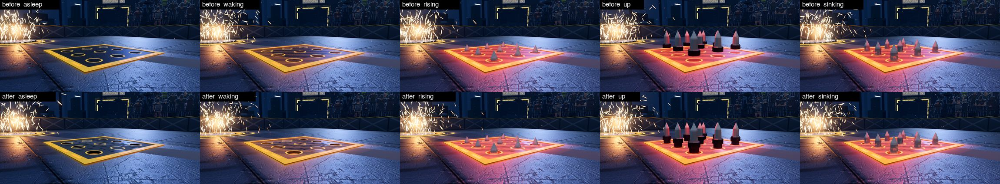
Close, low. Top: before. Bottom: after.
Drop Zone
Pit cover (two sliding leaves)Improved
Opens between 0:30 and 1:00 after a 3 s warning. Open 15 s (20 s from 0:45), open for good from 1:30
BeforeAlready believable: the two leaves drop 12 cm and slide out under the floor. They vanished into plain concrete, though, and nothing held them.
AfterA dark pocket along the top of the east and west shaft walls, where the leaves slide under the floor, with a steel rail at the bottom of each pocket that a dropped leaf runs out on. A steel lip runs along the north and south edges.
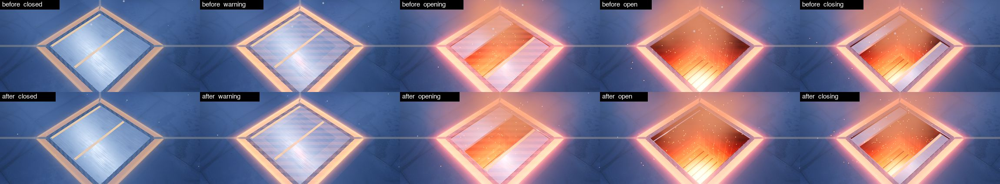
Fight camera. Top: before. Bottom: after.
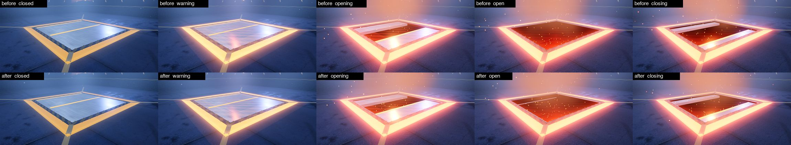
Close, low. Top: before. Bottom: after.
Pit: the pocket, closeImproved
BeforeSeen from above the open shaft, from the west.
AfterThe pocket and rail read faintly under the pit's smoke and glow, which is right for a detail.
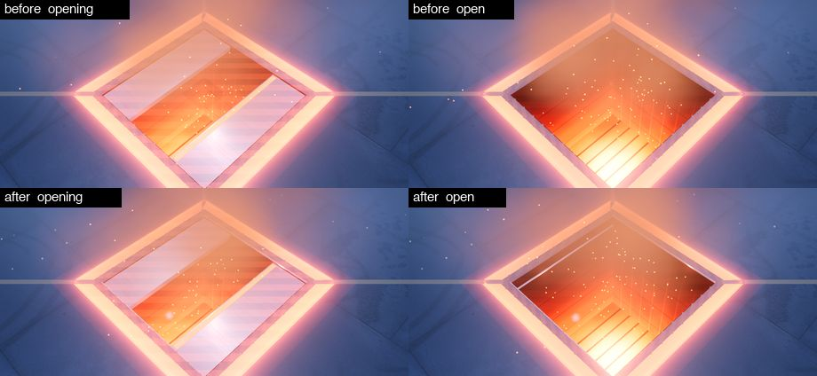
Fight camera. Top: before. Bottom: after.
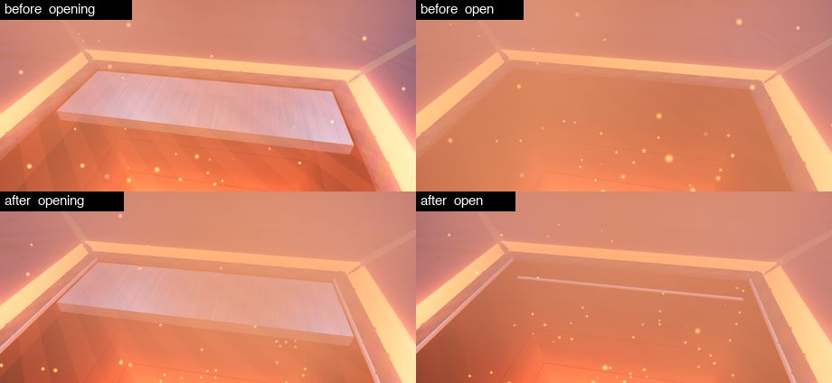
Close, low. Top: before. Bottom: after.
Furnace
North and south flame jets (6)Improved
Seeded 8 to 12 s, x0.75 from 0:45, 4 s at the endgame
BeforeA housing with a barrel and a fuel line up the wall. It worked, but it was a box stuck on the wall face with nothing that said where the fire came from before it came.
AfterA bolted mounting plate on the wall, and a pilot: a small flame under the barrel mouth on its own feed pipe. It is always lit and flares with the bezel in the warning rhythm, so the jet's own hardware says where the fire comes from.
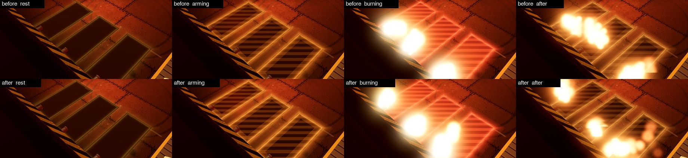
Fight camera. Top: before. Bottom: after.
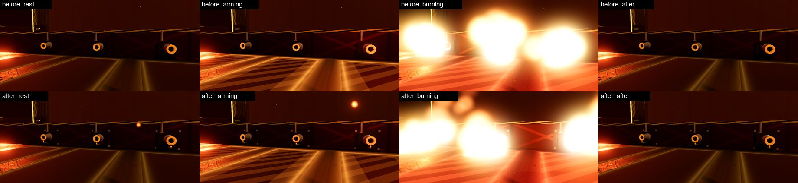
Close, low. Top: before. Bottom: after.
East flame jets (2, wake at 1:30)Improved
Asleep until 1:30, first burn 3 s after, then every 6 s
BeforeSame nozzle. While asleep, the hardware was already on the wall and the burn fans were painted.
AfterSame plate and pilot.
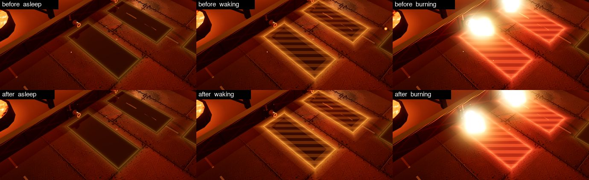
Fight camera. Top: before. Bottom: after.
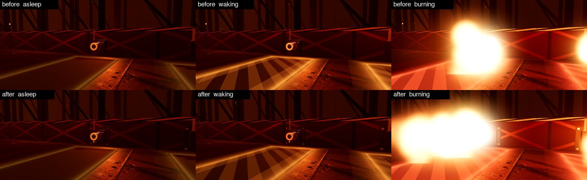
Close, low. Top: before. Bottom: after.
Conveyor belt (west wall)Fine as it was
1.2 m/s, 1.5 from 0:45, 2.4 at the endgame
BeforeSlats and chevrons scroll at the belt's real surface speed. The belt runs wall to wall and passes under both walls.
AfterNo change.
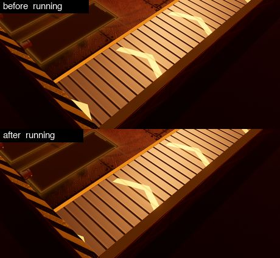
Fight camera. Top: before. Bottom: after.
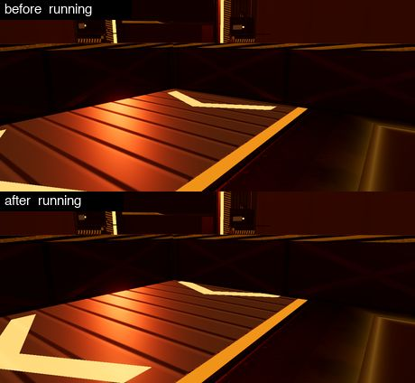
Close, low. Top: before. Bottom: after.
The Crush
Hydraulic rams (2)Fixed
Seeded 10 to 14 s, x0.75 from 0:45, half period at the endgame, 4.4 s in the final 25 s
BeforeA cast head with chrome rods going back into the wall and a housing behind the wall. The warning lamp floated 24 cm above the 0.65 m wall top. The rods went into bare wall.
AfterA steel port plate on the wall behind the head, with bolt heads (its edges show round the ram at rest). A gland round each rod where it enters the wall: hidden inside the head at rest, it shows as the head presses. The lamp now stands on a riser from the wall top.
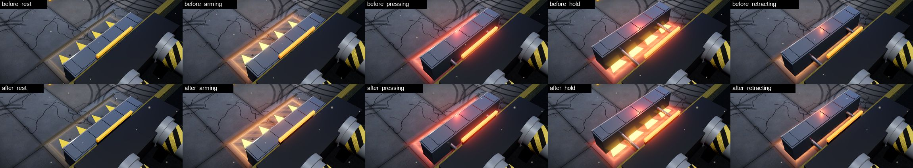
Fight camera. Top: before. Bottom: after.
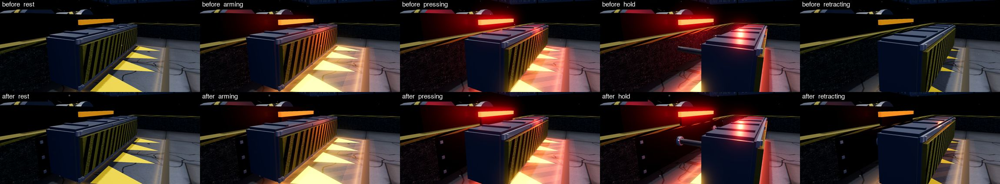
Close, low. Top: before. Bottom: after.
Corridor spike patch (1.4 m, wakes at 1:30)Fixed
Asleep until 1:30, 3.5 s arming, then 4.5 s cycle
BeforeSame painted bed and floating pins.
AfterSame sunk bed and pins.
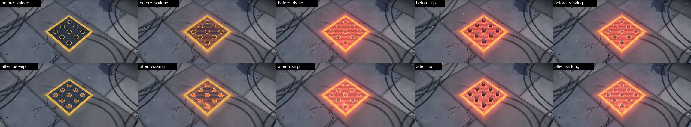
Fight camera. Top: before. Bottom: after.
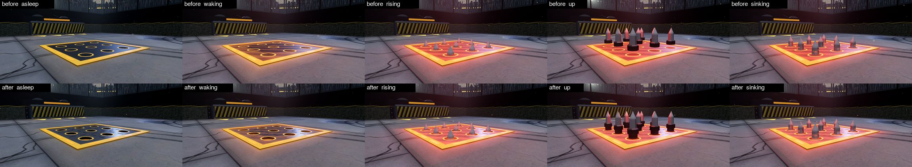
Close, low. Top: before. Bottom: after.
Coliseum
Centre spike patch (2.0 m)Fixed
Every 6 s, 4.5 s from 0:45, held up from the endgame
BeforeSame painted bed and floating pins.
AfterSame sunk bed. The grate uses a rough dark steel: a bright metal plate caught every overhead light as a white glare in the middle of the patch.
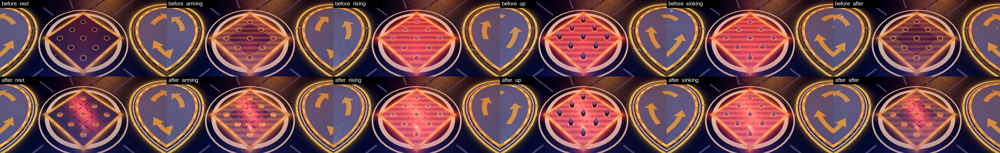
Fight camera. Top: before. Bottom: after.
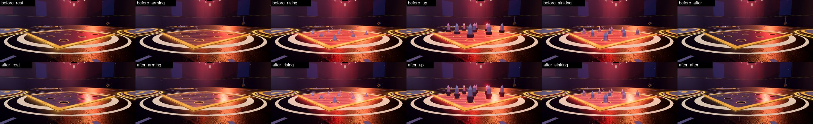
Close, low. Top: before. Bottom: after.
Floor grinders (2)Fixed
Always cutting
BeforeDisc lying on the floor.
AfterSunk well, motor and flush disc.
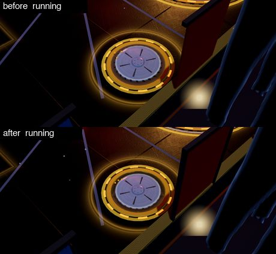
Fight camera. Top: before. Bottom: after.
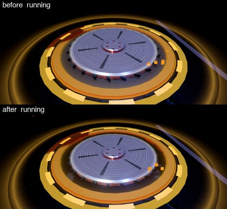
Close, low. Top: before. Bottom: after.
North and south jets (2)Improved
Seeded 8 to 12 s, one clock
BeforeSame nozzle as the Furnace's. The north banner hides the north nozzle from the fight camera (flagged below).
AfterMounting plate and pilot.
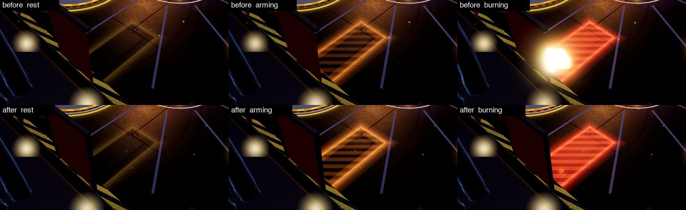
Fight camera. Top: before. Bottom: after.
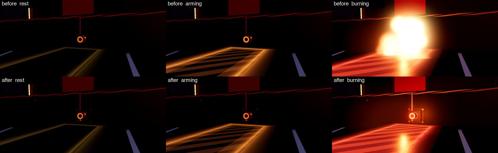
Close, low. Top: before. Bottom: after.
Turntables (2, 2 m)Improved
0.6 rad/s, x1.5 at 1:30, x2 at the endgame
BeforeA 4 cm proud disc lying on the floor.
AfterA fixed bearing ring for it to turn in: a dark running gap and a bolted steel bezel, flush on the floor round its foot.
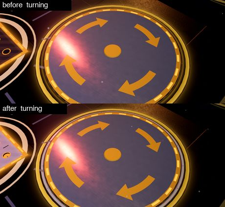
Fight camera. Top: before. Bottom: after.
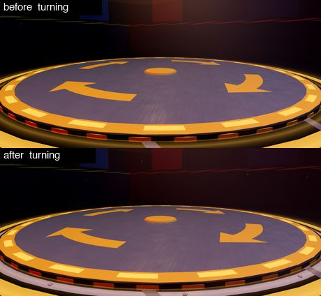
Close, low. Top: before. Bottom: after.
Arena banners (16), static dressingFixed
Always there
BeforeEach banner's crossbar hung 1.6 m over the wall top with nothing under it. Shot with a QA work light, because the Coliseum is too dark to judge dark metal otherwise.
AfterTwo masts per banner, standing on the wall top, built as one merged mesh.
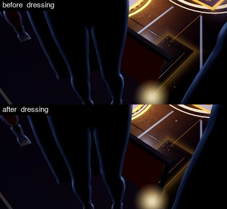
Fight camera. Top: before. Bottom: after.
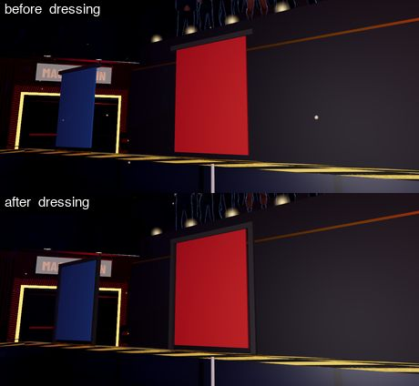
Close, low. Top: before. Bottom: after.
Test bay
Workshop test bay floorFixed
No hazards
BeforeThe spike patch was hidden, but the Yard's two wave B grinders came with the Yard and sat on the test bay floor, never waking.
AfterThe grinders are hidden (not freed) and dropped from the hazard schedule, so the warning layer's idle ring goes too. Their wells and the spike bed hole are filled back in, so the bay floor is bare plate.
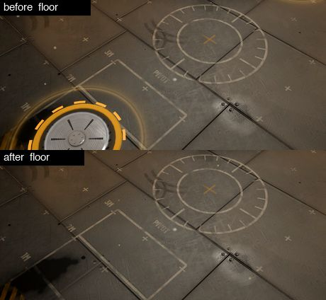
Fight camera. Top: before. Bottom: after.
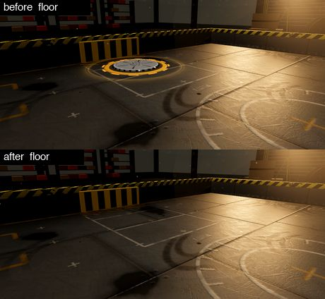
Close, low. Top: before. Bottom: after.
Side events
The Run: overhead presses (2)Fixed
5.2 s cycle
BeforeA steel platen hanging in mid-air with nothing holding it, going up and down.
AfterA C-frame: one column outside the far (+Z) corridor wall, so nothing stands between the fight camera and the lane, a cantilevered crosshead with a brace, and a cylinder standing through it. A chrome ram rod rides on the platen up into the cylinder.
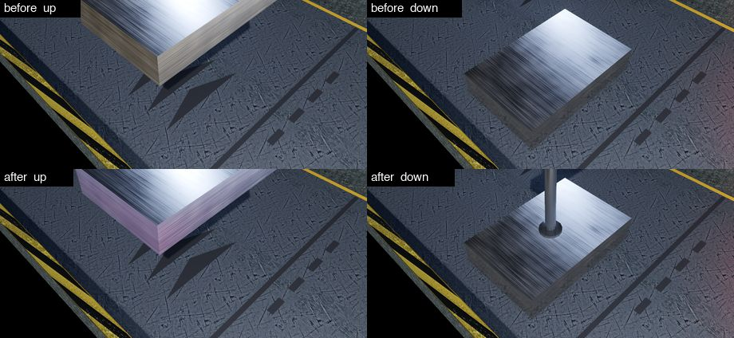
Fight camera. Top: before. Bottom: after.
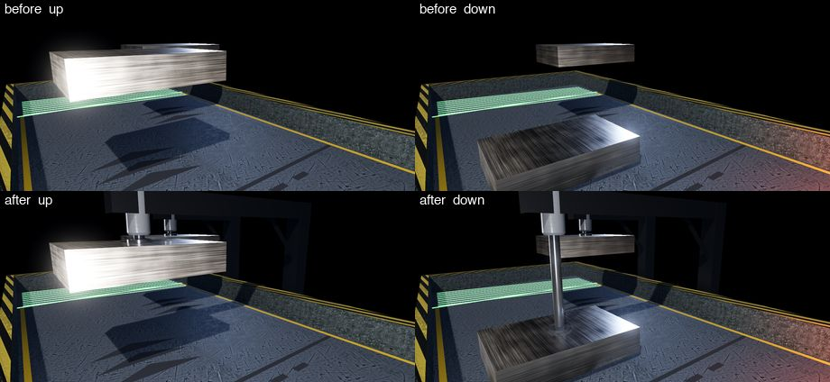
Close, low. Top: before. Bottom: after.
Pinball drop targets (2)Fixed
Drop when hit, back up after the reset
BeforeThe target sank straight through solid floor, and popped between up and down in one tick.
AfterA slot cut in the floor with a dark well deep enough for the whole target, and a steel frame round the mouth. The body still jumps on one tick (that is the rule), but the mesh eases after it: it drops in 0.12 s and rises in 0.3 s.
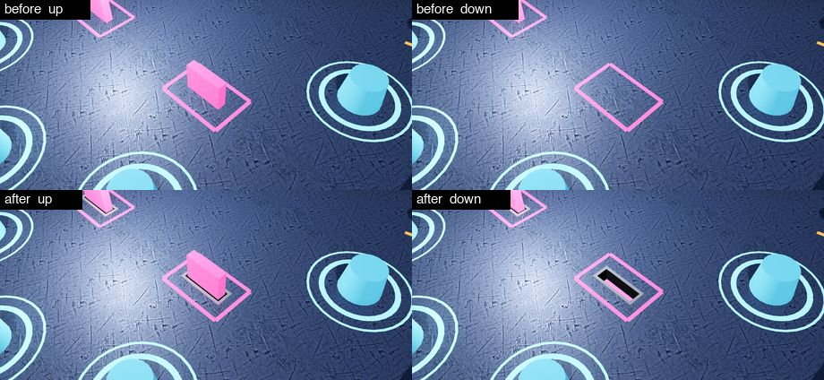
Fight camera. Top: before. Bottom: after.
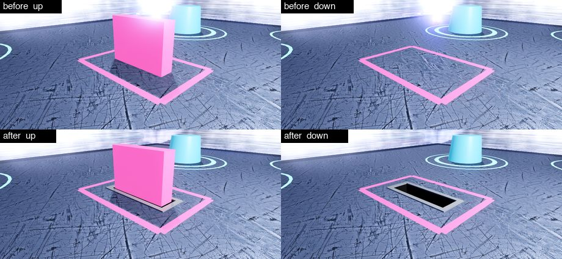
Close, low. Top: before. Bottom: after.
Static dressing on the arena floor
A low shot across each floor, and the fight camera at the centre. No prop floats over the fight floor or clips through it. The kit keeps all its dressing outside the walls, and every floor mark is flat paint. The one floating piece was the Coliseum banner poles, which are fixed above. On the Drop Zone, the white wedge in the low shot is a painted approach line seen end-on.
The Yard
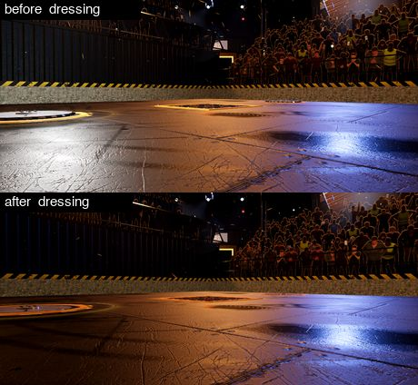
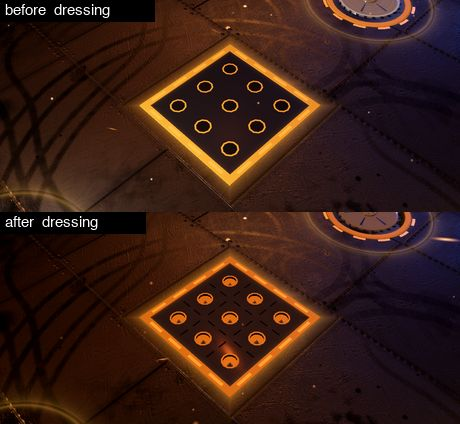
The Grinder
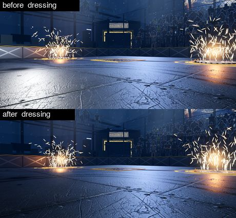
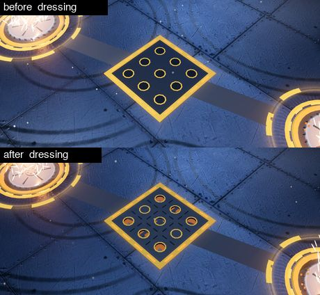
Drop Zone
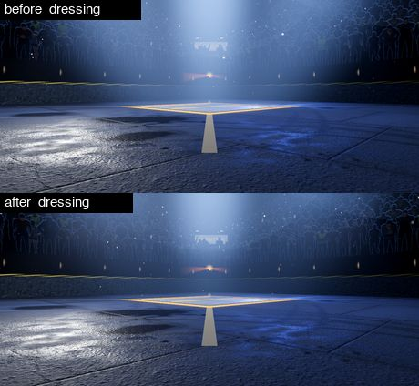
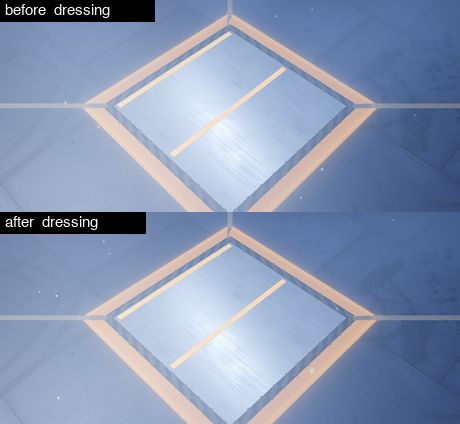
Furnace
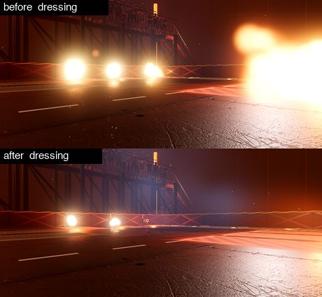
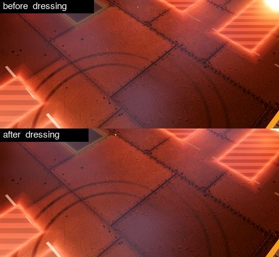
The Crush
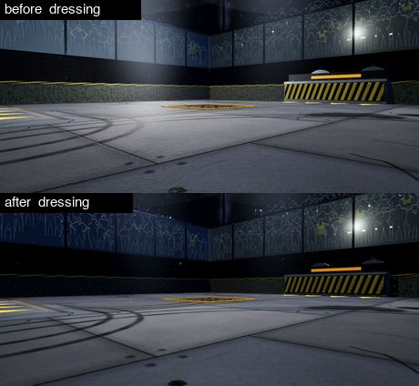
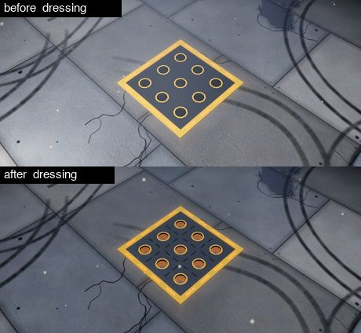
Coliseum
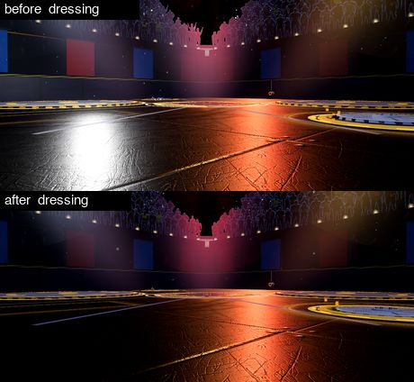
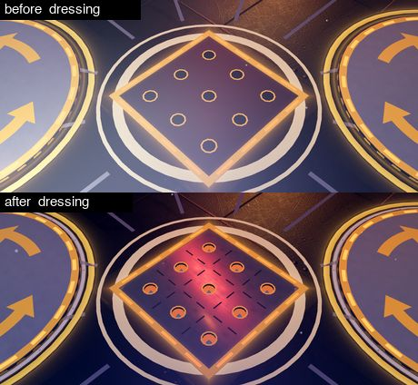
Gameplay proof
hazard_determinism_test in --record mode on the base commit and on the branch head gives the same hashes. The render-only nodes are added after every body and area, so the physics tree order is unchanged.
arena
base 39e0cd3
wave-c-hazards
yard
c814ec9e2c1a3b19
c814ec9e2c1a3b19
grinder
948cea0b512e1375
948cea0b512e1375
furnace
fa79709c3fddc315
fa79709c3fddc315
crush
29b028f7726a2f2f
29b028f7726a2f2f
drop_zone
3c8a0a72052ca8cf
3c8a0a72052ca8cf
coliseum
7c37e036b6df6957
7c37e036b6df6957
Other tests on the branch: arenas_test 155/0, hazard_warning_test 104/0, venue_kit_test 215/0 (fight hash identical with the kit at high, without it, and at low, in every arena), events_test 101/0, test_arena_runs_test 25/0. No golden moves. The committed GOLDEN table in hazard_determinism_test already differs from the base commit because of other agents' simulation work, and the integration pass re-records it.
Cost
arena (arena and hazards only, no kit)
triangles before
after
mesh surfaces before
after
Yard
3,548
5,506
46
47
Grinder
3,790
5,756
50
51
Drop Zone
360
404
26
28
Furnace
1,856
2,640
62
62
Crush
1,998
3,440
48
53
Coliseum
7,182
10,496
105
111
At most +3.3k triangles and +6 surfaces per arena, against a 58k-triangle hero machine. No new lights, textures, shaders or assets: everything is built in code from the existing hazard material slots (one new fallback slot, "grate"). Package size change is a few KB of script. The venue kit's ground plane is now one mesh with the holes cut out (it was up to four PlaneMeshes), which saves draw calls in the Drop Zone.
For the owner's eye
The Coliseum's north banner stands on the wall directly between the fight camera and the north flame jet, so that nozzle is hidden in the fight view. Moving or dropping that banner is a look call.
The Grinder's spark plumes (venue kit) shoot straight up off idle discs even when nothing touches them. That is decorative, not physical. Keep it for the look, or keep it only while a disc is cutting?
The Crush ram head is 0.75 m tall and the wall it comes out of is 0.65 m, so it stands 10 cm proud of the wall top. It reads fine because it sits in front of the wall, and changing it would change the collision box, so I left it.
The Coliseum is very dark in standalone renders. The banner frame needed a QA work light to judge. Check the dark metal on the phone.
Flame jets now carry a small always-lit pilot flame, including the Furnace's east bank while it sleeps. A sleeping jet with a lit pilot is a deliberate tell. Say if it should stay dark until its wake countdown.